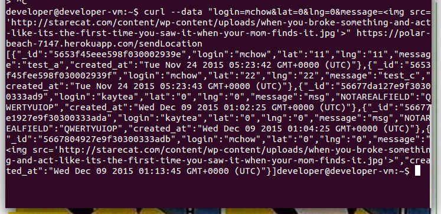
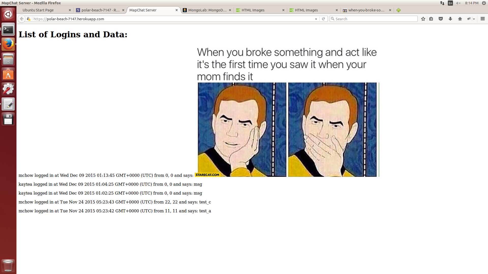
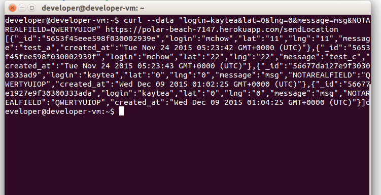
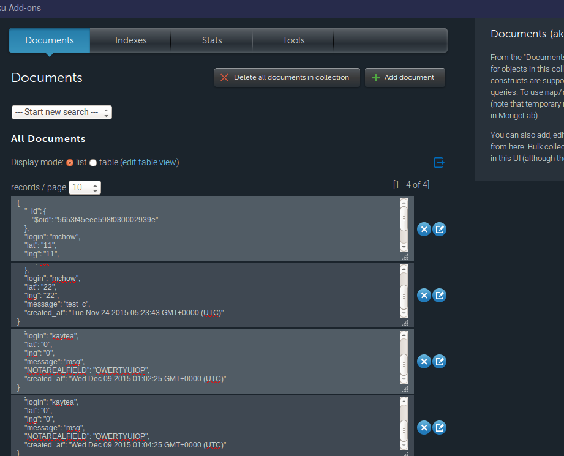
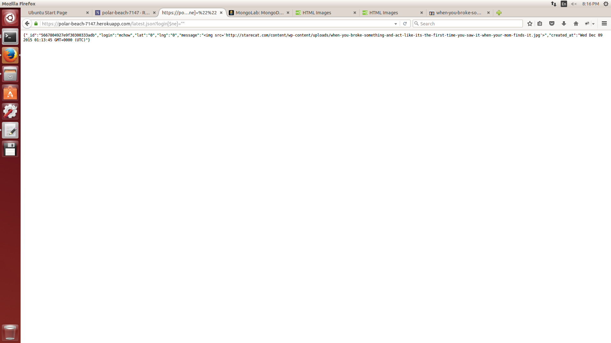

Security and Privacy Assessment of
by Peter Lee
Introduction
This document describes security vulnerabilities in a Heroku app that provides the following functionality:
- A HTTP POST API that takes a login, a latitude, a longitude, and a message, and stores the data
in a database
- A HTTP GET API that returns the most recent entry from a login specified as a query.
- An index page that formats displays all data entered into the database.
Methodology
Testing was mostly performed by entering appropriate urls into the Firefox web browser to
do GET requests with queries, and the curl command to do POST requests with the appropriate
parameters. There was a small amount of black box testing, but the vulnerabilities were mostly
discovered upon observation of the source code, white box testing.
Abstract of Findings
There are several important privacy and security issues with this Heroku app.
- Code can be injected into the index page, which can be used to make visitors
see unwanted content, redirect visitors to different pages, and so on. This is a vulnerability
of high importance.
- Unwanted data can be inserted into the Heroku app's database, which uses up allotted database
space and could disrupt searches
- Arbitrary data can be obtained from the Heroku app's database, which is a potential privacy risk.
Issues Found
XSS vulnerability
This vulnerability affects the index.html page and the POST API.
Severity: High
Because messages are not sanitized when they are sent to the database via .../sendLocation,
any HTML or Javascript code can be sent to the database. When this code is retreived and
shown on the page index.html, the code can be run, which a high security risk.

The above image shows the curl command that can inject code. Note the code in the message
parameter.

The above image shows an image that was injected via the previous command. While this
example is relatively innocuous, even Javascript code can be run, which is a severe vulnerability.
This problem can be fixed by sanitizing the message parameter on the server, and removing characters
needed to indicate HTML code such as <, >.
Adding additional fields


Modifying queries to Mongodb database

Conclusion